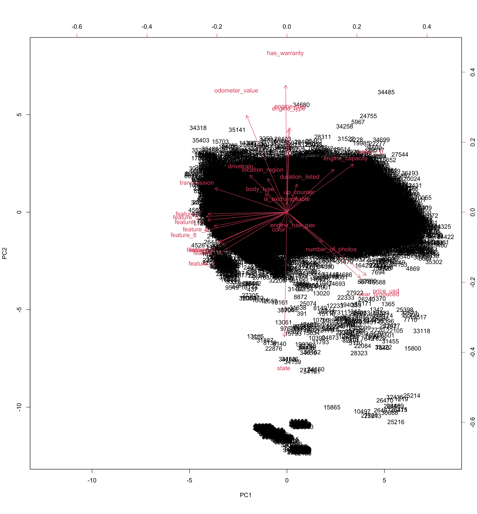

Used cars catalog analysis
Omega Smith and Ricardo David Barragan Martinez
General information
The following project will show the analysis of a data set found in Kaggle which gather information of sold cars. The information was collected by Kirill Lepchenkov. He collected the information from ads publications about used cars that were published in different sites. The data was scraped from the Belarus county on the 2nd of December 2019. Please visit his contribution on Kaggle, there you will find more information about the data and also the data set.
Setting up my environment
cars <- read.csv("~/OneDrive/Projects-Data/Cars/cars.csv")
cars_PCA <- read.csv("~/OneDrive/Projects-Data/Cars/cars.csv")
#Packages to create the factor analysis.
library(GPArotation) #GPArotation implements Gradient Projection Algorithms and several rotation objective functions for factor analysis.
library(psych) #Functions are primarily for multivariate analysis and scale construction using factor analysis, principal component analysis, cluster analysis and reliability analysis, although others provide basic descriptive statistics.
library(REdaS) #Statistic package
#Packages to transform the data
library(dplyr) #to transform the df (e.g. mutate)
library(tidyr) #to transform the df(e.g. unite)
#install.packages("corrplot")
#Correlogram is a graph of correlation matrix.
library(corrplot)
library(RColorBrewer)
library(Tmisc)
library(ggplot2) #to create graphsWhat is factor analysis?
One of the first steps to do on an analysis is to reduce the number of data to have the most valuable data to be analyzed. The general purpose of factor analysis is to get the relationship of the data. In order to do the factor analysis is necessary to make different mathematical procedures for the simplification of the measures or to discover the patterns. The use of Factor Analysis is useful to reduce the variables by observing groups of variables.
In order to consider something as a factor, it should contain at least three variables and if a factor contains 2 variables, then this should be interpreted with caution. The factors that contain 2 variables should be highly correlated with each another (r >.70) and uncorrelated to other variables.
Information from: Yong, A. G., & Pearce, S. (2013) A Beginner’s Guide to Factor Analysis: Focusing on Exploratory Factor Analysis, Tutorials in Quantitative Methods for Psychology, 9(2), 79-94. doi: 10.20982/tqmp.09.2.p079
The transformation of the data is important for the factor analysis, since the factor analysis only works with integers or floats and not with strings. The fact that the current data set contains strings makes impossible to use the data for the factor analysis. Therefore, the transformation is necessary.
A glance to the data
The data set “used-cars-catalog” is composed by 30 columns and more than 30K rows.
glimpse(cars)## Rows: 38,531
## Columns: 30
## $ manufacturer_name <chr> "Subaru", "Subaru", "Subaru", "Subaru", "Subaru", "S…
## $ model_name <chr> "Outback", "Outback", "Forester", "Impreza", "Legacy…
## $ transmission <chr> "automatic", "automatic", "automatic", "mechanical",…
## $ color <chr> "silver", "blue", "red", "blue", "black", "silver", …
## $ odometer_value <int> 190000, 290000, 402000, 10000, 280000, 132449, 31828…
## $ year_produced <int> 2010, 2002, 2001, 1999, 2001, 2011, 1998, 2004, 2010…
## $ engine_fuel <chr> "gasoline", "gasoline", "gasoline", "gasoline", "gas…
## $ engine_has_gas <chr> "False", "False", "False", "False", "False", "False"…
## $ engine_type <chr> "gasoline", "gasoline", "gasoline", "gasoline", "gas…
## $ engine_capacity <dbl> 2.5, 3.0, 2.5, 3.0, 2.5, 2.5, 2.5, 2.5, 2.5, 2.5, 2.…
## $ body_type <chr> "universal", "universal", "suv", "sedan", "universal…
## $ has_warranty <chr> "False", "False", "False", "False", "False", "False"…
## $ state <chr> "owned", "owned", "owned", "owned", "owned", "owned"…
## $ drivetrain <chr> "all", "all", "all", "all", "all", "all", "all", "al…
## $ price_usd <dbl> 10900.00, 5000.00, 2800.00, 9999.00, 2134.11, 14700.…
## $ is_exchangeable <chr> "False", "True", "True", "True", "True", "True", "Tr…
## $ location_region <chr> "Минская обл.", "Минская обл.", "Минская обл.", "Мин…
## $ number_of_photos <int> 9, 12, 4, 9, 14, 20, 8, 7, 17, 8, 14, 18, 13, 8, 24,…
## $ up_counter <int> 13, 54, 72, 42, 7, 56, 147, 29, 33, 11, 6, 61, 2, 94…
## $ feature_0 <chr> "False", "False", "False", "True", "False", "False",…
## $ feature_1 <chr> "True", "True", "True", "False", "True", "True", "Tr…
## $ feature_2 <chr> "True", "False", "False", "False", "False", "False",…
## $ feature_3 <chr> "True", "False", "False", "False", "True", "False", …
## $ feature_4 <chr> "False", "True", "False", "False", "True", "False", …
## $ feature_5 <chr> "True", "True", "False", "False", "False", "True", "…
## $ feature_6 <chr> "False", "False", "False", "False", "False", "False"…
## $ feature_7 <chr> "True", "False", "False", "False", "False", "True", …
## $ feature_8 <chr> "True", "False", "True", "False", "False", "True", "…
## $ feature_9 <chr> "True", "True", "True", "False", "True", "True", "Tr…
## $ duration_listed <int> 16, 83, 151, 86, 7, 67, 307, 73, 87, 43, 11, 80, 2, …summary(cars)## manufacturer_name model_name transmission color
## Length:38531 Length:38531 Length:38531 Length:38531
## Class :character Class :character Class :character Class :character
## Mode :character Mode :character Mode :character Mode :character
##
##
##
##
## odometer_value year_produced engine_fuel engine_has_gas
## Min. : 0 Min. :1942 Length:38531 Length:38531
## 1st Qu.: 158000 1st Qu.:1998 Class :character Class :character
## Median : 250000 Median :2003 Mode :character Mode :character
## Mean : 248865 Mean :2003
## 3rd Qu.: 325000 3rd Qu.:2009
## Max. :1000000 Max. :2019
##
## engine_type engine_capacity body_type has_warranty
## Length:38531 Min. :0.200 Length:38531 Length:38531
## Class :character 1st Qu.:1.600 Class :character Class :character
## Mode :character Median :2.000 Mode :character Mode :character
## Mean :2.055
## 3rd Qu.:2.300
## Max. :8.000
## NA's :10
## state drivetrain price_usd is_exchangeable
## Length:38531 Length:38531 Min. : 1 Length:38531
## Class :character Class :character 1st Qu.: 2100 Class :character
## Mode :character Mode :character Median : 4800 Mode :character
## Mean : 6640
## 3rd Qu.: 8990
## Max. :50000
##
## location_region number_of_photos up_counter feature_0
## Length:38531 Min. : 1.000 Min. : 1.00 Length:38531
## Class :character 1st Qu.: 5.000 1st Qu.: 2.00 Class :character
## Mode :character Median : 8.000 Median : 5.00 Mode :character
## Mean : 9.649 Mean : 16.31
## 3rd Qu.:12.000 3rd Qu.: 16.00
## Max. :86.000 Max. :1861.00
##
## feature_1 feature_2 feature_3 feature_4
## Length:38531 Length:38531 Length:38531 Length:38531
## Class :character Class :character Class :character Class :character
## Mode :character Mode :character Mode :character Mode :character
##
##
##
##
## feature_5 feature_6 feature_7 feature_8
## Length:38531 Length:38531 Length:38531 Length:38531
## Class :character Class :character Class :character Class :character
## Mode :character Mode :character Mode :character Mode :character
##
##
##
##
## feature_9 duration_listed
## Length:38531 Min. : 0.00
## Class :character 1st Qu.: 23.00
## Mode :character Median : 59.00
## Mean : 80.58
## 3rd Qu.: 91.00
## Max. :2232.00
## In order to have only one name of the cars, the columns “manufacturer_name” and “model_name” were combined into cars to have a better an unique representation of the cars.
cars <- cars %>%
unite(car, c("manufacturer_name", "model_name"))Transformation of the data
To transform the data, it was necessary to observe the data and then provide a numerical representation of the data. The new values are not representative of their actual value or preference, rather is their correlation with the other variables what is more relevant after this transformation.
Transmission
| Group | Variable | Changed by |
|---|---|---|
| transmission | automatic | 1 |
| transmission | mechanical | 2 |
| transmission | NA | 0 |
Color
| Group | Variable | Changed by |
|---|---|---|
| color | silver | 1 |
| color | blue | 2 |
| color | red | 3 |
| color | black | 4 |
| color | grey | 5 |
| color | other | 6 |
| color | brown | 7 |
| color | white | 8 |
| color | green | 9 |
| color | violet | 10 |
| color | orange | 11 |
| color | yellow | 12 |
| color | NA | 0 |
Engine fuel
| Group | Variable | Changed by |
|---|---|---|
| engine fuel | gasoline | 1 |
| engine fuel | gas | 2 |
| engine fuel | diesel | 3 |
| engine fuel | hybrid-petrol | 4 |
| engine fuel | hybrid-diesel | 5 |
| engine fuel | hybrid | 6 |
| engine fuel | NA | 0 |
Engine type
| Group | Variable | Changed by |
|---|---|---|
| engine type | gasoline | 1 |
| engine type | diesel | 2 |
| engine type | electric | 3 |
| engine type | NA | 0 |
Body type
| Group | Variable | Changed by |
|---|---|---|
| body type | universal | 1 |
| body type | suv | 2 |
| body type | sedan | 3 |
| body type | hatchback | 4 |
| body type | liftback | 5 |
| body type | minivan | 6 |
| body type | minibus | 7 |
| body type | van | 8 |
| body type | pickup | 9 |
| body type | coupe | 10 |
| body type | cabriolet | 11 |
| body type | limousine | 12 |
| body type | NA | 0 |
State
| Group | Variable | Changed by |
|---|---|---|
| state | owned | 1 |
| state | emergency | 2 |
| state | new | 3 |
| state | NA | 4 |
Drivetrain
| Group | Variable | Changed by |
|---|---|---|
| drivetrain | all | 1 |
| drivetrain | front | 2 |
| drivetrain | rear | 3 |
| drivetrain | NA | 4 |
Location region
| Group | Variable | Changed by |
|---|---|---|
| location region | Минская обл. | 1 |
| location region | Гомельская обл. | 2 |
| location region | Брестская обл. | 3 |
| location region | Могилевская обл. | 4 |
| location region | Витебская обл. | 5 |
| location region | Гродненская обл. | 6 |
| location region | NA | 0 |
Engine capacity
For the variable engine capacity, there were ten rows that did not have any information about the variable, and these were transformed from NA to 0.
Other values
There were other variables that had Boolean values, these were transformed as True (1) and False (2). In this case the same value was given to the NA values, this means NA = 0.
How was the data transformed?
In order to transform the data the function mutate was used. Example:
In addition, the different values were gotten with the function unique.
unique(cars$transmission)## [1] "automatic" "mechanical"Factor analysis
For the factor analysis one extra change was done. As it was explained before, it is necessary to only use the values in the analysis and do not consider some strings or characters. Therefore, for the analysis the new column car was removed to have only a subset with values.
cars_for_factor_analysis <- subset(cars, select = -car)Is the factor analysis significant?
Bartletts test of spherecity
The first step of the factor analysis is to understand if the analysis makes sense. This can be seen with the p-value. In general we want to have the Bartletts test of spherecity to be significant. In this case the p-value is highly significant.
bart_spher(cars_for_factor_analysis)## Bartlett's Test of Sphericity
##
## Call: bart_spher(x = cars_for_factor_analysis)
##
## X2 = 471200.97
## df = 378
## p-value < 2.22e-16KMO
For the measure Kaiser-Meyer-Olkin we want to have a value over .7 in the overall MSA.
KMO(cars_for_factor_analysis)## Kaiser-Meyer-Olkin factor adequacy
## Call: KMO(r = cars_for_factor_analysis)
## Overall MSA = 0.8
## MSA for each item =
## transmission color odometer_value year_produced
## 0.93 0.73 0.91 0.84
## engine_fuel engine_has_gas engine_type engine_capacity
## 0.44 0.07 0.44 0.77
## body_type has_warranty state drivetrain
## 0.76 0.62 0.61 0.87
## price_usd is_exchangeable location_region number_of_photos
## 0.87 0.61 0.92 0.90
## up_counter feature_0 feature_1 feature_2
## 0.51 0.79 0.83 0.95
## feature_3 feature_4 feature_5 feature_6
## 0.96 0.93 0.96 0.92
## feature_7 feature_8 feature_9 duration_listed
## 0.93 0.96 0.87 0.51As it could be observed in the two previous test the values are acceptable and the factor analysis can be performed. The sampling adequacy was acceptable and the Bartlett’s test of sphericity demonstrate that correlations between items were enough for FA(\(X^{2}\)(378) = 471200.97, p< .001).
Kaiser’s rule
The first step is to observe how many factors there are that we can use for our future analysis. The following analysis is based on the Kaiser’s rule. For this we are going to do the factor analysis in our new subset with all the transformed values and then we are going to consider all the variables or all the factors of the subset. In addition, the rotation method that is going to be implemented in this analysis will be the default rotation method called oblimin. For this analysis the selection of the oblimin method is based on the assumption that there is going to be a correlation between factors. For instance, there could be a strong correlation between engine type and engine fuel.
fa(cars_for_factor_analysis, nfactors = 28, rotate = "oblimin") #6 values greather than 1 based on Karses rule## Warning in GPFoblq(L, Tmat = Tmat, normalize = normalize, eps = eps, maxit =
## maxit, : convergence not obtained in GPFoblq. 1000 iterations used.## Factor Analysis using method = minres
## Call: fa(r = cars_for_factor_analysis, nfactors = 28, rotate = "oblimin")
## Standardized loadings (pattern matrix) based upon correlation matrix
## MR3 MR2 MR4 MR6 MR1 MR7 MR5 MR13 MR14 MR8
## transmission 0.00 0.00 0.00 0.00 0.00 -0.01 -0.02 0.76 0.01 -0.02
## color -0.01 -0.01 0.01 0.00 -0.01 -0.06 -0.04 -0.01 -0.02 -0.02
## odometer_value 0.11 -0.06 -0.01 0.01 0.03 -0.12 0.07 0.05 -0.03 -0.02
## year_produced 0.00 0.00 0.00 0.00 0.00 0.93 -0.01 -0.01 0.00 -0.01
## engine_fuel 1.00 0.00 0.00 0.00 -0.01 -0.03 -0.04 -0.04 0.00 -0.11
## engine_has_gas 0.00 0.00 0.00 -0.01 -0.01 -0.03 -0.05 -0.03 0.00 0.69
## engine_type 0.96 0.00 0.00 0.00 0.01 0.03 0.05 0.05 0.00 0.13
## engine_capacity 0.00 -0.01 0.00 0.00 0.00 -0.02 0.83 -0.02 -0.01 -0.03
## body_type 0.00 -0.01 0.00 0.01 0.00 0.02 0.02 0.00 0.00 0.01
## has_warranty 0.00 -0.88 0.01 -0.01 0.00 -0.02 0.00 0.00 0.00 -0.01
## state 0.00 0.88 0.01 -0.01 0.00 -0.02 -0.01 -0.01 0.00 -0.01
## drivetrain 0.00 0.00 0.01 0.01 0.02 -0.06 -0.05 0.04 0.02 0.01
## price_usd 0.05 0.10 0.01 0.00 -0.08 0.19 0.10 -0.06 -0.03 0.06
## is_exchangeable 0.00 -0.06 -0.04 0.02 -0.01 0.02 -0.03 0.01 -0.06 0.00
## location_region 0.03 -0.03 0.00 0.00 0.00 -0.08 -0.06 0.05 0.00 -0.08
## number_of_photos -0.01 -0.02 0.00 0.01 -0.01 -0.01 -0.02 -0.02 -0.02 -0.02
## up_counter 0.00 0.00 0.85 0.00 0.00 0.01 0.01 0.00 0.00 0.01
## feature_0 0.00 -0.01 0.00 0.90 -0.01 0.01 0.00 -0.01 0.00 -0.01
## feature_1 -0.01 0.03 -0.02 -0.36 0.00 -0.09 -0.02 0.03 0.04 0.00
## feature_2 0.00 0.01 0.00 -0.03 0.06 0.01 -0.08 0.04 0.17 -0.01
## feature_3 -0.02 0.03 0.00 0.00 0.13 -0.04 0.02 0.09 0.02 0.04
## feature_4 0.00 0.00 0.00 0.01 0.01 -0.01 -0.01 0.01 0.75 0.00
## feature_5 0.02 0.00 0.00 -0.05 0.02 -0.03 -0.04 0.04 0.07 -0.02
## feature_6 -0.02 -0.01 0.00 0.00 0.73 0.00 -0.04 -0.01 0.03 -0.02
## feature_7 0.01 0.01 0.00 -0.01 0.74 -0.02 0.02 0.03 0.00 0.01
## feature_8 -0.03 0.03 -0.01 0.00 0.12 -0.07 -0.03 0.04 0.02 -0.01
## feature_9 0.01 0.02 0.00 -0.43 0.02 0.00 -0.04 0.04 0.09 -0.02
## duration_listed 0.00 0.00 0.85 0.00 0.00 -0.02 0.00 0.00 -0.01 -0.01
## MR9 MR11 MR10 MR15 MR12 MR17 MR18 MR16 MR19 MR21
## transmission 0.01 0.00 0.00 0.00 0.00 0.00 0.00 0.01 0.00 0.00
## color 0.07 0.00 -0.03 0.00 0.14 0.32 0.04 -0.04 -0.09 0.00
## odometer_value 0.02 0.02 -0.03 -0.02 -0.06 -0.03 -0.05 0.07 -0.09 0.30
## year_produced 0.00 -0.01 0.00 0.00 0.00 0.00 0.00 0.00 0.00 0.00
## engine_fuel 0.01 -0.01 -0.01 0.01 -0.02 0.00 -0.01 0.01 0.00 0.00
## engine_has_gas 0.01 -0.01 0.00 0.00 0.00 0.00 0.00 0.00 0.00 -0.01
## engine_type -0.01 0.01 0.01 -0.01 0.02 0.00 0.01 -0.01 0.00 0.01
## engine_capacity 0.01 -0.01 -0.01 0.00 0.00 0.00 0.00 0.00 0.00 0.00
## body_type 0.60 -0.01 0.01 -0.01 -0.01 0.01 0.01 0.00 0.02 0.01
## has_warranty 0.00 0.00 -0.01 0.00 0.00 0.00 0.01 0.00 0.01 0.02
## state 0.00 0.00 -0.01 0.00 0.00 0.00 0.01 0.00 0.01 0.02
## drivetrain 0.21 0.06 -0.03 0.01 0.04 -0.06 -0.31 0.02 -0.12 -0.07
## price_usd 0.01 -0.02 0.15 -0.05 -0.02 0.24 -0.05 0.03 0.26 -0.04
## is_exchangeable 0.00 -0.02 -0.13 -0.03 0.06 -0.01 0.02 0.31 0.11 -0.10
## location_region 0.00 -0.02 -0.08 0.05 0.06 -0.05 -0.01 -0.24 0.17 0.03
## number_of_photos 0.00 -0.01 0.56 0.01 0.01 -0.01 0.00 0.00 0.00 -0.01
## up_counter 0.00 0.00 0.05 -0.01 0.00 -0.01 0.01 0.00 -0.03 -0.02
## feature_0 -0.01 -0.02 0.01 0.00 -0.02 0.01 0.00 0.00 0.01 -0.01
## feature_1 0.02 0.01 0.01 -0.03 0.31 0.02 0.00 0.02 0.02 0.01
## feature_2 0.04 0.05 0.00 0.33 0.04 -0.03 0.14 0.12 0.05 0.00
## feature_3 0.02 0.12 -0.02 0.34 -0.05 0.03 -0.04 -0.01 -0.05 0.03
## feature_4 0.00 0.02 -0.01 0.00 0.01 0.00 0.00 0.00 0.00 0.00
## feature_5 0.02 0.58 -0.01 0.02 0.00 0.00 -0.01 0.02 0.00 0.02
## feature_6 0.00 -0.02 -0.01 0.04 0.00 0.03 -0.03 0.02 -0.02 -0.03
## feature_7 0.01 0.04 0.00 -0.02 0.00 -0.03 0.04 -0.01 0.01 0.04
## feature_8 0.04 0.23 -0.07 0.04 0.02 0.02 0.21 -0.01 -0.03 -0.08
## feature_9 0.04 0.00 -0.01 0.03 -0.22 0.09 0.06 0.03 0.01 -0.11
## duration_listed 0.00 0.00 -0.05 0.01 0.00 0.01 -0.01 0.00 0.03 0.02
## MR23 MR20 MR26 MR27 MR24 MR22 MR25 MR28 h2 u2 com
## transmission 0.00 -0.01 0.00 0.00 0.00 0.00 0.00 0 0.634 0.366 1.0
## color -0.04 0.03 -0.03 0.00 0.00 0.02 0.02 0 0.095 0.905 2.0
## odometer_value 0.01 0.18 0.08 0.03 0.06 0.04 0.05 0 0.456 0.544 4.1
## year_produced 0.00 0.00 0.00 0.00 0.00 0.00 0.00 0 0.880 0.120 1.0
## engine_fuel 0.02 -0.02 -0.01 -0.02 0.00 0.00 0.01 0 0.995 0.005 1.0
## engine_has_gas -0.01 0.00 0.00 0.00 0.00 0.00 -0.01 0 0.477 0.523 1.0
## engine_type -0.03 0.02 0.01 0.02 0.00 0.01 -0.01 0 0.995 0.005 1.1
## engine_capacity 0.00 0.00 0.00 0.00 0.00 0.00 0.00 0 0.728 0.272 1.0
## body_type -0.01 -0.02 0.00 -0.01 0.00 -0.01 0.00 0 0.332 0.668 1.0
## has_warranty -0.01 -0.03 0.01 0.00 -0.05 0.08 -0.03 0 0.794 0.206 1.0
## state -0.01 -0.03 0.01 0.00 -0.05 0.08 -0.03 0 0.782 0.218 1.0
## drivetrain 0.02 0.15 -0.05 0.05 -0.03 0.07 -0.01 0 0.382 0.618 3.7
## price_usd 0.10 -0.05 -0.10 -0.11 0.01 0.00 -0.03 0 0.893 0.107 6.8
## is_exchangeable -0.06 0.02 0.09 -0.05 -0.09 -0.03 -0.01 0 0.217 0.783 3.1
## location_region -0.06 0.10 0.07 0.00 0.04 0.03 0.03 0 0.136 0.864 4.8
## number_of_photos -0.02 0.01 0.01 -0.01 -0.02 0.00 0.00 0 0.297 0.703 1.0
## up_counter 0.00 -0.04 -0.01 0.00 0.05 0.08 0.06 0 0.757 0.243 1.1
## feature_0 -0.01 0.00 -0.01 0.00 0.00 0.00 -0.01 0 0.882 0.118 1.0
## feature_1 0.17 -0.01 0.06 0.12 0.07 0.02 0.05 0 0.699 0.301 3.2
## feature_2 -0.04 0.04 -0.07 0.08 0.06 0.02 -0.03 0 0.522 0.478 3.3
## feature_3 0.09 -0.06 0.18 0.03 0.01 -0.02 0.05 0 0.591 0.409 3.1
## feature_4 0.01 0.00 0.01 0.00 0.00 0.00 0.00 0 0.609 0.391 1.0
## feature_5 -0.01 0.00 0.02 0.05 0.04 0.01 0.01 0 0.616 0.384 1.1
## feature_6 -0.03 -0.01 0.03 0.00 0.07 0.01 -0.07 0 0.638 0.362 1.1
## feature_7 0.03 0.01 -0.01 0.02 -0.06 -0.01 0.07 0 0.668 0.332 1.1
## feature_8 0.18 0.09 0.11 0.04 0.02 0.03 0.00 0 0.603 0.397 6.0
## feature_9 -0.03 0.08 0.06 0.14 -0.05 0.02 0.06 0 0.658 0.342 2.6
## duration_listed 0.00 0.03 0.01 0.00 -0.05 -0.08 -0.06 0 0.750 0.250 1.1
##
## MR3 MR2 MR4 MR6 MR1 MR7 MR5 MR13 MR14 MR8 MR9
## SS loadings 1.97 1.61 1.46 1.42 1.43 1.23 0.86 0.84 0.85 0.53 0.49
## Proportion Var 0.07 0.06 0.05 0.05 0.05 0.04 0.03 0.03 0.03 0.02 0.02
## Cumulative Var 0.07 0.13 0.18 0.23 0.28 0.33 0.36 0.39 0.42 0.44 0.45
## Proportion Explained 0.12 0.09 0.09 0.08 0.08 0.07 0.05 0.05 0.05 0.03 0.03
## Cumulative Proportion 0.12 0.21 0.30 0.38 0.46 0.53 0.58 0.63 0.68 0.71 0.74
## MR11 MR10 MR15 MR12 MR17 MR18 MR16 MR19 MR21 MR23 MR20
## SS loadings 0.76 0.49 0.46 0.22 0.25 0.24 0.21 0.26 0.21 0.20 0.19
## Proportion Var 0.03 0.02 0.02 0.01 0.01 0.01 0.01 0.01 0.01 0.01 0.01
## Cumulative Var 0.48 0.50 0.51 0.52 0.53 0.54 0.55 0.56 0.56 0.57 0.58
## Proportion Explained 0.04 0.03 0.03 0.01 0.01 0.01 0.01 0.02 0.01 0.01 0.01
## Cumulative Proportion 0.79 0.82 0.84 0.86 0.87 0.89 0.90 0.91 0.92 0.94 0.95
## MR26 MR27 MR24 MR22 MR25 MR28
## SS loadings 0.31 0.36 0.09 0.05 0.08 0.00
## Proportion Var 0.01 0.01 0.00 0.00 0.00 0.00
## Cumulative Var 0.59 0.60 0.61 0.61 0.61 0.61
## Proportion Explained 0.02 0.02 0.01 0.00 0.00 0.00
## Cumulative Proportion 0.97 0.99 0.99 1.00 1.00 1.00
##
## With factor correlations of
## MR3 MR2 MR4 MR6 MR1 MR7 MR5 MR13 MR14 MR8 MR9 MR11
## MR3 1.00 -0.06 0.00 0.01 -0.10 0.03 0.12 0.16 -0.01 0.06 0.13 0.06
## MR2 -0.06 1.00 -0.03 -0.20 0.05 0.23 -0.06 -0.09 0.08 0.04 -0.08 0.12
## MR4 0.00 -0.03 1.00 0.05 -0.04 -0.01 0.10 -0.05 -0.08 -0.01 0.02 -0.05
## MR6 0.01 -0.20 0.05 1.00 -0.30 0.34 0.16 -0.28 -0.39 0.02 -0.23 -0.41
## MR1 -0.10 0.05 -0.04 -0.30 1.00 -0.51 -0.33 0.50 0.56 -0.06 0.26 0.56
## MR7 0.03 0.23 -0.01 0.34 -0.51 1.00 0.02 -0.51 -0.20 0.13 -0.20 -0.52
## MR5 0.12 -0.06 0.10 0.16 -0.33 0.02 1.00 -0.60 -0.67 -0.05 -0.07 -0.31
## MR13 0.16 -0.09 -0.05 -0.28 0.50 -0.51 -0.60 1.00 0.66 0.05 0.35 0.58
## MR14 -0.01 0.08 -0.08 -0.39 0.56 -0.20 -0.67 0.66 1.00 -0.02 0.30 0.68
## MR8 0.06 0.04 -0.01 0.02 -0.06 0.13 -0.05 0.05 -0.02 1.00 -0.03 -0.04
## MR9 0.13 -0.08 0.02 -0.23 0.26 -0.20 -0.07 0.35 0.30 -0.03 1.00 0.39
## MR11 0.06 0.12 -0.05 -0.41 0.56 -0.52 -0.31 0.58 0.68 -0.04 0.39 1.00
## MR10 0.05 0.19 0.05 0.12 -0.37 0.49 0.24 -0.40 -0.22 0.15 -0.16 -0.26
## MR15 -0.11 0.07 -0.01 -0.15 0.57 -0.22 -0.36 0.35 0.52 -0.10 0.18 0.42
## MR12 -0.06 0.03 -0.05 -0.19 -0.04 -0.20 -0.05 0.02 -0.06 0.08 0.03 0.03
## MR17 0.04 0.25 0.03 -0.22 -0.15 0.36 0.16 -0.17 0.01 0.06 0.10 -0.07
## MR18 -0.07 0.03 -0.05 -0.24 0.25 -0.03 -0.10 0.13 0.26 -0.01 -0.18 0.22
## MR16 0.10 -0.09 -0.10 -0.17 0.17 -0.01 -0.25 0.19 0.31 -0.01 0.18 0.21
## MR19 0.07 0.17 0.00 0.00 -0.28 0.50 0.18 -0.23 -0.11 0.04 -0.16 -0.19
## MR21 0.24 -0.14 0.04 0.17 0.09 -0.40 0.34 0.10 -0.15 -0.08 -0.10 0.11
## MR23 0.00 0.27 -0.04 -0.43 0.20 -0.26 0.07 0.09 0.05 -0.16 0.15 0.39
## MR20 0.19 -0.11 -0.05 -0.16 0.15 -0.41 0.04 0.26 0.05 0.04 0.31 0.19
## MR26 -0.03 -0.15 -0.09 -0.39 0.58 -0.57 -0.14 0.51 0.26 0.01 0.03 0.49
## MR27 0.00 0.02 -0.05 -0.72 0.50 -0.63 -0.31 0.60 0.59 0.07 0.32 0.57
## MR24 0.03 0.03 -0.04 -0.09 0.22 -0.13 -0.05 0.16 0.31 -0.05 0.02 0.16
## MR22 0.05 0.04 0.05 -0.18 0.08 -0.15 -0.03 0.07 0.09 0.05 0.15 0.08
## MR25 0.07 0.00 -0.06 -0.35 0.13 -0.25 0.12 0.16 0.04 -0.12 0.07 0.22
## MR28 0.00 0.00 0.00 0.00 0.00 0.00 0.00 0.00 0.00 0.00 0.00 0.00
## MR10 MR15 MR12 MR17 MR18 MR16 MR19 MR21 MR23 MR20 MR26 MR27
## MR3 0.05 -0.11 -0.06 0.04 -0.07 0.10 0.07 0.24 0.00 0.19 -0.03 0.00
## MR2 0.19 0.07 0.03 0.25 0.03 -0.09 0.17 -0.14 0.27 -0.11 -0.15 0.02
## MR4 0.05 -0.01 -0.05 0.03 -0.05 -0.10 0.00 0.04 -0.04 -0.05 -0.09 -0.05
## MR6 0.12 -0.15 -0.19 -0.22 -0.24 -0.17 0.00 0.17 -0.43 -0.16 -0.39 -0.72
## MR1 -0.37 0.57 -0.04 -0.15 0.25 0.17 -0.28 0.09 0.20 0.15 0.58 0.50
## MR7 0.49 -0.22 -0.20 0.36 -0.03 -0.01 0.50 -0.40 -0.26 -0.41 -0.57 -0.63
## MR5 0.24 -0.36 -0.05 0.16 -0.10 -0.25 0.18 0.34 0.07 0.04 -0.14 -0.31
## MR13 -0.40 0.35 0.02 -0.17 0.13 0.19 -0.23 0.10 0.09 0.26 0.51 0.60
## MR14 -0.22 0.52 -0.06 0.01 0.26 0.31 -0.11 -0.15 0.05 0.05 0.26 0.59
## MR8 0.15 -0.10 0.08 0.06 -0.01 -0.01 0.04 -0.08 -0.16 0.04 0.01 0.07
## MR9 -0.16 0.18 0.03 0.10 -0.18 0.18 -0.16 -0.10 0.15 0.31 0.03 0.32
## MR11 -0.26 0.42 0.03 -0.07 0.22 0.21 -0.19 0.11 0.39 0.19 0.49 0.57
## MR10 1.00 -0.20 -0.01 0.26 -0.08 -0.16 0.17 -0.10 0.13 -0.32 -0.49 -0.29
## MR15 -0.20 1.00 -0.14 -0.04 0.20 0.19 -0.13 -0.04 0.03 0.03 0.36 0.37
## MR12 -0.01 -0.14 1.00 -0.08 -0.06 -0.01 0.04 0.10 0.34 -0.08 0.00 0.06
## MR17 0.26 -0.04 -0.08 1.00 0.07 0.06 0.39 -0.30 0.22 -0.13 -0.10 -0.13
## MR18 -0.08 0.20 -0.06 0.07 1.00 0.10 0.16 -0.08 0.10 -0.08 0.21 0.23
## MR16 -0.16 0.19 -0.01 0.06 0.10 1.00 0.06 -0.14 0.01 0.06 0.15 0.15
## MR19 0.17 -0.13 0.04 0.39 0.16 0.06 1.00 -0.14 0.07 -0.20 -0.22 -0.36
## MR21 -0.10 -0.04 0.10 -0.30 -0.08 -0.14 -0.14 1.00 0.05 0.09 0.14 -0.02
## MR23 0.13 0.03 0.34 0.22 0.10 0.01 0.07 0.05 1.00 -0.04 0.23 0.20
## MR20 -0.32 0.03 -0.08 -0.13 -0.08 0.06 -0.20 0.09 -0.04 1.00 0.20 0.36
## MR26 -0.49 0.36 0.00 -0.10 0.21 0.15 -0.22 0.14 0.23 0.20 1.00 0.50
## MR27 -0.29 0.37 0.06 -0.13 0.23 0.15 -0.36 -0.02 0.20 0.36 0.50 1.00
## MR24 0.20 0.22 0.22 0.02 0.02 -0.03 -0.21 0.07 0.18 -0.03 0.11 0.15
## MR22 0.16 0.01 0.03 -0.05 0.01 0.00 -0.20 0.00 0.03 -0.08 0.04 0.19
## MR25 0.19 -0.02 -0.03 -0.12 0.20 -0.08 -0.21 0.06 0.30 0.07 0.17 0.26
## MR28 0.00 0.00 0.00 0.00 0.00 0.00 0.00 0.00 0.00 0.00 0.00 0.00
## MR24 MR22 MR25 MR28
## MR3 0.03 0.05 0.07 0
## MR2 0.03 0.04 0.00 0
## MR4 -0.04 0.05 -0.06 0
## MR6 -0.09 -0.18 -0.35 0
## MR1 0.22 0.08 0.13 0
## MR7 -0.13 -0.15 -0.25 0
## MR5 -0.05 -0.03 0.12 0
## MR13 0.16 0.07 0.16 0
## MR14 0.31 0.09 0.04 0
## MR8 -0.05 0.05 -0.12 0
## MR9 0.02 0.15 0.07 0
## MR11 0.16 0.08 0.22 0
## MR10 0.20 0.16 0.19 0
## MR15 0.22 0.01 -0.02 0
## MR12 0.22 0.03 -0.03 0
## MR17 0.02 -0.05 -0.12 0
## MR18 0.02 0.01 0.20 0
## MR16 -0.03 0.00 -0.08 0
## MR19 -0.21 -0.20 -0.21 0
## MR21 0.07 0.00 0.06 0
## MR23 0.18 0.03 0.30 0
## MR20 -0.03 -0.08 0.07 0
## MR26 0.11 0.04 0.17 0
## MR27 0.15 0.19 0.26 0
## MR24 1.00 0.08 0.20 0
## MR22 0.08 1.00 0.15 0
## MR25 0.20 0.15 1.00 0
## MR28 0.00 0.00 0.00 1
##
## Mean item complexity = 2.2
## Test of the hypothesis that 28 factors are sufficient.
##
## The degrees of freedom for the null model are 378 and the objective function was 12.23 with Chi Square of 471201
## The degrees of freedom for the model are -28 and the objective function was 0
##
## The root mean square of the residuals (RMSR) is 0
## The df corrected root mean square of the residuals is NA
##
## The harmonic number of observations is 38531 with the empirical chi square 0 with prob < NA
## The total number of observations was 38531 with Likelihood Chi Square = 0 with prob < NA
##
## Tucker Lewis Index of factoring reliability = 1.001
## Fit based upon off diagonal values = 1
## Measures of factor score adequacy
## MR3 MR2 MR4 MR6 MR1 MR7
## Correlation of (regression) scores with factors 1.00 0.94 0.92 0.95 0.91 0.96
## Multiple R square of scores with factors 1.00 0.88 0.86 0.90 0.82 0.91
## Minimum correlation of possible factor scores 0.99 0.77 0.71 0.80 0.64 0.83
## MR5 MR13 MR14 MR8 MR9 MR11
## Correlation of (regression) scores with factors 0.89 0.89 0.89 0.92 0.71 0.85
## Multiple R square of scores with factors 0.80 0.79 0.79 0.86 0.50 0.73
## Minimum correlation of possible factor scores 0.60 0.59 0.58 0.71 0.01 0.45
## MR10 MR15 MR12 MR17 MR18
## Correlation of (regression) scores with factors 0.75 0.74 0.67 0.74 0.62
## Multiple R square of scores with factors 0.56 0.55 0.45 0.55 0.38
## Minimum correlation of possible factor scores 0.12 0.11 -0.09 0.10 -0.24
## MR16 MR19 MR21 MR23 MR20
## Correlation of (regression) scores with factors 0.56 0.73 0.69 0.75 0.62
## Multiple R square of scores with factors 0.31 0.54 0.48 0.56 0.39
## Minimum correlation of possible factor scores -0.38 0.08 -0.04 0.12 -0.23
## MR26 MR27 MR24 MR22 MR25
## Correlation of (regression) scores with factors 0.77 0.89 0.52 0.43 0.57
## Multiple R square of scores with factors 0.60 0.80 0.27 0.19 0.32
## Minimum correlation of possible factor scores 0.20 0.60 -0.47 -0.62 -0.35
## MR28
## Correlation of (regression) scores with factors 0
## Multiple R square of scores with factors 0
## Minimum correlation of possible factor scores -1Based on the Kaiser’s rule, we can observe that there are a total of 6 factors that are above the recommended value of 1 of the eigenvalues. This can be observed in the ss loadings section.
After getting the number of factors that we should use for the analysis, then we adjust the analysis with 6 factors.
#Rerun the test with the significant factors found in the previous rule
fa(cars_for_factor_analysis, nfactors = 6, rotate = "oblimin")## Warning in fa.stats(r = r, f = f, phi = phi, n.obs = n.obs, np.obs = np.obs, :
## The estimated weights for the factor scores are probably incorrect. Try a
## different factor score estimation method.## Warning in fac(r = r, nfactors = nfactors, n.obs = n.obs, rotate = rotate, : An
## ultra-Heywood case was detected. Examine the results carefully## Factor Analysis using method = minres
## Call: fa(r = cars_for_factor_analysis, nfactors = 6, rotate = "oblimin")
## Standardized loadings (pattern matrix) based upon correlation matrix
## MR5 MR1 MR3 MR6 MR2 MR4 h2 u2 com
## transmission 0.22 0.51 0.15 0.05 -0.07 0.00 0.448 0.5524 1.6
## color -0.04 -0.03 -0.01 0.17 -0.01 0.02 0.022 0.9781 1.3
## odometer_value 0.61 -0.14 0.24 -0.04 -0.05 -0.02 0.406 0.5944 1.4
## year_produced -0.86 0.13 0.03 -0.15 0.07 -0.01 0.794 0.2060 1.1
## engine_fuel 0.01 -0.01 0.94 -0.01 0.00 0.00 0.889 0.1108 1.0
## engine_has_gas -0.14 0.08 0.05 0.02 -0.02 -0.01 0.019 0.9814 2.0
## engine_type -0.02 0.03 1.00 0.00 0.00 0.00 1.001 -0.0006 1.0
## engine_capacity 0.20 -0.71 0.06 0.02 0.04 0.04 0.439 0.5607 1.2
## body_type 0.03 0.10 0.10 0.11 -0.06 0.03 0.046 0.9537 3.8
## has_warranty 0.03 0.01 0.00 0.02 -0.89 0.02 0.790 0.2097 1.0
## state -0.01 -0.01 -0.01 0.01 0.83 0.01 0.703 0.2970 1.0
## drivetrain 0.24 0.12 0.07 0.03 -0.05 0.02 0.110 0.8902 1.9
## price_usd -0.68 -0.29 0.09 0.07 0.19 0.03 0.731 0.2687 1.6
## is_exchangeable -0.15 0.12 -0.01 0.02 -0.18 -0.08 0.048 0.9524 3.3
## location_region 0.22 -0.01 0.02 -0.02 -0.02 0.00 0.048 0.9515 1.1
## number_of_photos -0.24 -0.13 0.02 0.02 0.06 0.03 0.105 0.8947 1.7
## up_counter -0.01 0.01 0.00 0.02 0.01 1.00 0.997 0.0026 1.0
## feature_0 0.04 0.02 0.01 -0.98 0.01 0.00 0.912 0.0884 1.0
## feature_1 0.18 -0.02 -0.01 0.63 0.06 -0.04 0.518 0.4822 1.2
## feature_2 0.05 0.59 0.00 0.10 0.03 0.00 0.431 0.5689 1.1
## feature_3 0.41 0.38 -0.02 0.08 0.12 0.01 0.487 0.5133 2.3
## feature_4 -0.03 0.68 0.04 0.12 0.00 0.00 0.518 0.4818 1.1
## feature_5 0.31 0.39 0.09 0.21 0.08 0.00 0.498 0.5022 2.7
## feature_6 0.36 0.45 -0.09 -0.04 0.12 0.01 0.453 0.5474 2.2
## feature_7 0.49 0.33 -0.03 0.03 0.15 0.00 0.499 0.5006 2.0
## feature_8 0.35 0.30 -0.04 0.28 0.09 -0.03 0.522 0.4777 3.1
## feature_9 -0.03 0.30 0.03 0.54 -0.01 0.00 0.484 0.5156 1.6
## duration_listed 0.04 -0.01 0.00 -0.06 -0.03 0.70 0.493 0.5074 1.0
##
## MR5 MR1 MR3 MR6 MR2 MR4
## SS loadings 3.05 2.99 2.03 2.17 1.67 1.50
## Proportion Var 0.11 0.11 0.07 0.08 0.06 0.05
## Cumulative Var 0.11 0.22 0.29 0.37 0.43 0.48
## Proportion Explained 0.23 0.22 0.15 0.16 0.12 0.11
## Cumulative Proportion 0.23 0.45 0.60 0.76 0.89 1.00
##
## With factor correlations of
## MR5 MR1 MR3 MR6 MR2 MR4
## MR5 1.00 0.37 0.01 0.37 -0.18 -0.02
## MR1 0.37 1.00 -0.06 0.35 0.08 -0.08
## MR3 0.01 -0.06 1.00 0.00 -0.06 0.01
## MR6 0.37 0.35 0.00 1.00 0.21 -0.04
## MR2 -0.18 0.08 -0.06 0.21 1.00 -0.02
## MR4 -0.02 -0.08 0.01 -0.04 -0.02 1.00
##
## Mean item complexity = 1.6
## Test of the hypothesis that 6 factors are sufficient.
##
## The degrees of freedom for the null model are 378 and the objective function was 12.23 with Chi Square of 471201
## The degrees of freedom for the model are 225 and the objective function was 1.12
##
## The root mean square of the residuals (RMSR) is 0.02
## The df corrected root mean square of the residuals is 0.03
##
## The harmonic number of observations is 38531 with the empirical chi square 16897.61 with prob < 0
## The total number of observations was 38531 with Likelihood Chi Square = 43252.92 with prob < 0
##
## Tucker Lewis Index of factoring reliability = 0.846
## RMSEA index = 0.07 and the 90 % confidence intervals are 0.07 0.071
## BIC = 40877.09
## Fit based upon off diagonal values = 0.99From the information above, it is important to observe the pattern matrix of standardized loadings. The matrix shows the correlation between the item or variable and the factor. For the interpretation of the loading, we consider that if the loading is above 0.5 then it is considered as a valid loading.
There were six factors that together explain the 48% of variance, with each factor of variance. The factor eigenvalues are:
- Factor one Eigenvalue = 3.05
- Factor two Eigenvalue = 2.99
- Factor three Eigenvalue = 2.03
- Factor four Eigenvalue = 2.17
- Factor five Eigenvalue = 1.67
- Factor six Eigenvalue = 1.50
The following diagram shows the information of the factor loadings the items and the loadings that every factors have. In addition, the lines shows the correlations between the selected factors.
M1 <- fa(cars_for_factor_analysis, nfactors = 6, rotate = "oblimin")## Warning in fa.stats(r = r, f = f, phi = phi, n.obs = n.obs, np.obs = np.obs, :
## The estimated weights for the factor scores are probably incorrect. Try a
## different factor score estimation method.## Warning in fac(r = r, nfactors = nfactors, n.obs = n.obs, rotate = rotate, : An
## ultra-Heywood case was detected. Examine the results carefullyfa.diagram(M1, main="cars_for_factor_analysis")
The factor analysis was based on the R Tutorial of Dr. Paul Christiansen, all the credits to him.
Correlation Matrix
Matrix_Corrlation <-cor(cars_for_factor_analysis)
corrplot(Matrix_Corrlation, type="upper", order="hclust",
col=brewer.pal(n=8, name="RdYlBu"))
Subset without features
cars_for_factor_analysis_w_features <- subset(cars, select = c(-car,
-feature_0,-feature_1,
-feature_2, -feature_3,
-feature_4, -feature_5,
-feature_6, -feature_7,
-feature_8, -feature_9))Bartletts
bart_spher(cars_for_factor_analysis_w_features)## Bartlett's Test of Sphericity
##
## Call: bart_spher(x = cars_for_factor_analysis_w_features)
##
## X2 = 262215.505
## df = 153
## p-value < 2.22e-16KMO
KMO(cars_for_factor_analysis_w_features)## Kaiser-Meyer-Olkin factor adequacy
## Call: KMO(r = cars_for_factor_analysis_w_features)
## Overall MSA = 0.57
## MSA for each item =
## transmission color odometer_value year_produced
## 0.75 0.34 0.86 0.70
## engine_fuel engine_has_gas engine_type engine_capacity
## 0.44 0.06 0.44 0.47
## body_type has_warranty state drivetrain
## 0.63 0.59 0.57 0.83
## price_usd is_exchangeable location_region number_of_photos
## 0.72 0.60 0.90 0.81
## up_counter duration_listed
## 0.50 0.50Factor analysis
fa(cars_for_factor_analysis_w_features, nfactors = 18, rotate = "oblimin") ## Warning in GPFoblq(L, Tmat = Tmat, normalize = normalize, eps = eps, maxit =
## maxit, : convergence not obtained in GPFoblq. 1000 iterations used.## Factor Analysis using method = minres
## Call: fa(r = cars_for_factor_analysis_w_features, nfactors = 18, rotate = "oblimin")
## Standardized loadings (pattern matrix) based upon correlation matrix
## MR2 MR4 MR3 MR1 MR5 MR9 MR6 MR7 MR8 MR10
## transmission 0.00 0.00 0.00 -0.01 -0.03 0.75 -0.03 0.01 -0.01 -0.01
## color 0.00 0.01 0.00 -0.09 -0.04 0.01 -0.04 0.04 -0.04 0.40
## odometer_value 0.12 0.05 -0.01 -0.16 0.09 0.06 -0.04 0.03 -0.04 -0.06
## year_produced 0.00 0.00 0.00 0.91 -0.01 -0.01 -0.02 0.00 0.00 0.00
## engine_fuel 1.01 0.01 0.00 -0.03 -0.04 -0.05 -0.11 0.01 0.00 -0.01
## engine_has_gas 0.00 0.01 0.00 -0.03 -0.05 -0.03 0.68 0.01 0.00 0.00
## engine_type 0.95 0.00 0.00 0.04 0.05 0.07 0.13 -0.01 0.01 0.01
## engine_capacity 0.00 0.01 0.00 -0.01 0.84 -0.02 -0.03 0.00 0.00 0.00
## body_type 0.00 0.00 0.00 0.02 0.02 0.01 0.01 0.57 0.00 0.02
## has_warranty 0.00 0.87 0.01 -0.01 0.00 -0.01 -0.01 0.00 -0.01 0.00
## state 0.00 -0.89 0.01 -0.01 -0.01 -0.01 -0.01 0.00 -0.01 0.00
## drivetrain 0.01 0.00 0.00 -0.05 -0.04 0.02 0.00 0.23 -0.02 -0.02
## price_usd 0.04 -0.08 0.01 0.26 0.10 -0.07 0.07 -0.01 0.14 0.18
## is_exchangeable 0.00 0.07 -0.04 0.00 -0.04 -0.02 -0.02 0.00 -0.13 0.01
## location_region 0.04 0.04 0.00 -0.11 -0.06 0.03 -0.09 0.00 -0.08 -0.04
## number_of_photos 0.00 0.02 0.00 -0.02 -0.01 -0.02 -0.02 -0.01 0.56 -0.01
## up_counter 0.00 -0.01 0.85 0.00 0.00 0.01 0.01 0.00 0.05 0.00
## duration_listed 0.00 0.01 0.85 -0.01 0.01 -0.01 -0.01 0.00 -0.05 0.00
## MR13 MR16 MR11 MR12 MR14 MR15 MR17 MR18 h2 u2 com
## transmission -0.01 0.00 0.01 0.00 0.00 0.00 -0.01 0 0.62 0.383 1.0
## color 0.06 -0.04 -0.04 -0.03 0.01 0.03 0.00 0 0.12 0.884 1.3
## odometer_value 0.32 0.03 0.02 0.08 0.17 -0.02 0.03 0 0.43 0.573 3.3
## year_produced 0.00 0.00 0.00 -0.01 0.00 0.00 0.00 0 0.84 0.161 1.0
## engine_fuel -0.02 0.00 0.02 0.00 0.00 -0.03 0.01 0 1.00 0.005 1.0
## engine_has_gas 0.00 0.00 0.01 0.00 0.00 0.02 0.00 0 0.47 0.526 1.0
## engine_type 0.03 0.01 -0.01 0.01 0.00 0.04 0.00 0 1.00 0.005 1.1
## engine_capacity 0.00 0.00 0.00 0.00 0.00 0.00 0.01 0 0.73 0.268 1.0
## body_type -0.01 0.03 0.00 -0.02 -0.01 -0.01 0.01 0 0.31 0.691 1.0
## has_warranty -0.05 0.03 0.01 0.00 0.08 0.05 -0.03 0 0.79 0.210 1.0
## state -0.05 0.02 0.01 0.00 0.07 0.04 -0.02 0 0.79 0.214 1.0
## drivetrain 0.04 -0.30 0.01 0.21 0.03 0.03 -0.06 0 0.35 0.654 3.1
## price_usd -0.20 0.16 0.07 0.14 -0.06 -0.14 0.06 0 0.90 0.104 7.5
## is_exchangeable -0.02 0.08 0.26 0.03 -0.15 0.14 -0.01 0 0.19 0.812 3.6
## location_region -0.01 0.11 -0.26 0.11 -0.02 0.05 0.06 0 0.13 0.872 3.6
## number_of_photos 0.01 0.01 0.00 0.00 -0.01 0.01 0.00 0 0.30 0.703 1.0
## up_counter -0.03 -0.05 -0.01 -0.04 0.05 0.00 0.07 0 0.75 0.249 1.0
## duration_listed 0.03 0.05 0.00 0.04 -0.05 -0.01 -0.07 0 0.74 0.262 1.0
##
## MR2 MR4 MR3 MR1 MR5 MR9 MR6 MR7 MR8 MR10 MR13
## SS loadings 1.97 1.59 1.45 1.16 0.79 0.69 0.52 0.43 0.46 0.25 0.32
## Proportion Var 0.11 0.09 0.08 0.06 0.04 0.04 0.03 0.02 0.03 0.01 0.02
## Cumulative Var 0.11 0.20 0.28 0.34 0.39 0.43 0.45 0.48 0.50 0.52 0.54
## Proportion Explained 0.19 0.15 0.14 0.11 0.08 0.07 0.05 0.04 0.04 0.02 0.03
## Cumulative Proportion 0.19 0.34 0.48 0.59 0.67 0.73 0.78 0.83 0.87 0.89 0.93
## MR16 MR11 MR12 MR14 MR15 MR17 MR18
## SS loadings 0.22 0.16 0.10 0.13 0.11 0.05 0.00
## Proportion Var 0.01 0.01 0.01 0.01 0.01 0.00 0.00
## Cumulative Var 0.55 0.56 0.56 0.57 0.58 0.58 0.58
## Proportion Explained 0.02 0.02 0.01 0.01 0.01 0.00 0.00
## Cumulative Proportion 0.95 0.96 0.97 0.98 1.00 1.00 1.00
##
## With factor correlations of
## MR2 MR4 MR3 MR1 MR5 MR9 MR6 MR7 MR8 MR10 MR13 MR16
## MR2 1.00 0.06 0.00 0.03 0.12 0.17 0.06 0.13 0.04 0.01 0.17 0.12
## MR4 0.06 1.00 0.03 -0.24 0.07 0.08 -0.05 0.10 -0.19 -0.23 0.25 -0.03
## MR3 0.00 0.03 1.00 0.00 0.11 -0.05 -0.01 0.02 0.06 0.05 -0.07 0.01
## MR1 0.03 -0.24 0.00 1.00 0.02 -0.52 0.16 -0.21 0.53 0.43 -0.67 0.39
## MR5 0.12 0.07 0.11 0.02 1.00 -0.61 -0.05 -0.05 0.22 0.22 0.04 0.40
## MR9 0.17 0.08 -0.05 -0.52 -0.61 1.00 0.05 0.34 -0.41 -0.33 0.40 -0.28
## MR6 0.06 -0.05 -0.01 0.16 -0.05 0.05 1.00 -0.04 0.16 0.15 0.00 0.03
## MR7 0.13 0.10 0.02 -0.21 -0.05 0.34 -0.04 1.00 -0.17 0.09 0.15 -0.36
## MR8 0.04 -0.19 0.06 0.53 0.22 -0.41 0.16 -0.17 1.00 0.35 -0.40 0.05
## MR10 0.01 -0.23 0.05 0.43 0.22 -0.33 0.15 0.09 0.35 1.00 -0.46 0.31
## MR13 0.17 0.25 -0.07 -0.67 0.04 0.40 0.00 0.15 -0.40 -0.46 1.00 -0.35
## MR16 0.12 -0.03 0.01 0.39 0.40 -0.28 0.03 -0.36 0.05 0.31 -0.35 1.00
## MR11 0.12 0.07 -0.07 0.22 -0.04 -0.08 0.00 0.07 0.01 0.13 -0.18 0.15
## MR12 0.21 -0.06 0.02 -0.02 0.20 -0.04 0.08 0.29 -0.03 0.15 0.01 0.13
## MR14 0.15 0.04 0.07 -0.49 0.10 0.20 -0.07 0.14 -0.01 -0.24 0.17 -0.26
## MR15 -0.08 0.25 -0.04 -0.28 -0.32 0.31 0.30 0.06 -0.43 -0.32 0.17 -0.20
## MR17 0.12 -0.06 -0.03 0.19 0.35 -0.18 0.02 -0.14 0.56 0.20 -0.15 0.00
## MR18 0.00 0.00 0.00 0.00 0.00 0.00 0.00 0.00 0.00 0.00 0.00 0.00
## MR11 MR12 MR14 MR15 MR17 MR18
## MR2 0.12 0.21 0.15 -0.08 0.12 0
## MR4 0.07 -0.06 0.04 0.25 -0.06 0
## MR3 -0.07 0.02 0.07 -0.04 -0.03 0
## MR1 0.22 -0.02 -0.49 -0.28 0.19 0
## MR5 -0.04 0.20 0.10 -0.32 0.35 0
## MR9 -0.08 -0.04 0.20 0.31 -0.18 0
## MR6 0.00 0.08 -0.07 0.30 0.02 0
## MR7 0.07 0.29 0.14 0.06 -0.14 0
## MR8 0.01 -0.03 -0.01 -0.43 0.56 0
## MR10 0.13 0.15 -0.24 -0.32 0.20 0
## MR13 -0.18 0.01 0.17 0.17 -0.15 0
## MR16 0.15 0.13 -0.26 -0.20 0.00 0
## MR11 1.00 0.10 -0.12 0.03 -0.10 0
## MR12 0.10 1.00 -0.06 -0.15 -0.20 0
## MR14 -0.12 -0.06 1.00 0.22 0.11 0
## MR15 0.03 -0.15 0.22 1.00 -0.31 0
## MR17 -0.10 -0.20 0.11 -0.31 1.00 0
## MR18 0.00 0.00 0.00 0.00 0.00 1
##
## Mean item complexity = 1.9
## Test of the hypothesis that 18 factors are sufficient.
##
## The degrees of freedom for the null model are 153 and the objective function was 6.81 with Chi Square of 262215.5
## The degrees of freedom for the model are -18 and the objective function was 0
##
## The root mean square of the residuals (RMSR) is 0
## The df corrected root mean square of the residuals is NA
##
## The harmonic number of observations is 38531 with the empirical chi square 0 with prob < NA
## The total number of observations was 38531 with Likelihood Chi Square = 0 with prob < NA
##
## Tucker Lewis Index of factoring reliability = 1.001
## Fit based upon off diagonal values = 1
## Measures of factor score adequacy
## MR2 MR4 MR3 MR1 MR5 MR9
## Correlation of (regression) scores with factors 1.00 0.94 0.92 0.94 0.89 0.87
## Multiple R square of scores with factors 1.00 0.88 0.85 0.89 0.79 0.77
## Minimum correlation of possible factor scores 0.99 0.76 0.70 0.77 0.57 0.53
## MR6 MR7 MR8 MR10 MR13
## Correlation of (regression) scores with factors 0.93 0.67 0.75 0.72 0.79
## Multiple R square of scores with factors 0.86 0.45 0.57 0.52 0.63
## Minimum correlation of possible factor scores 0.72 -0.10 0.13 0.04 0.26
## MR16 MR11 MR12 MR14 MR15
## Correlation of (regression) scores with factors 0.71 0.50 0.55 0.60 0.71
## Multiple R square of scores with factors 0.50 0.25 0.30 0.36 0.51
## Minimum correlation of possible factor scores 0.01 -0.50 -0.39 -0.28 0.01
## MR17 MR18
## Correlation of (regression) scores with factors 0.55 0
## Multiple R square of scores with factors 0.30 0
## Minimum correlation of possible factor scores -0.40 -1Factor analysis
fa(cars_for_factor_analysis_w_features, nfactors = 5, rotate = "oblimin") ## Warning in fa.stats(r = r, f = f, phi = phi, n.obs = n.obs, np.obs = np.obs, :
## The estimated weights for the factor scores are probably incorrect. Try a
## different factor score estimation method.## Warning in fac(r = r, nfactors = nfactors, n.obs = n.obs, rotate = rotate, : An
## ultra-Heywood case was detected. Examine the results carefully## Factor Analysis using method = minres
## Call: fa(r = cars_for_factor_analysis_w_features, nfactors = 5, rotate = "oblimin")
## Standardized loadings (pattern matrix) based upon correlation matrix
## MR1 MR2 MR4 MR3 MR5 h2 u2 com
## transmission -0.42 0.16 -0.04 0.01 -0.45 0.4586 0.54138 2.3
## color -0.02 -0.01 -0.03 0.02 0.00 0.0015 0.99851 2.2
## odometer_value -0.58 0.23 0.03 -0.02 0.18 0.4030 0.59701 1.5
## year_produced 0.89 0.04 0.03 -0.01 -0.12 0.7525 0.24751 1.0
## engine_fuel 0.00 0.94 0.01 0.00 0.03 0.8893 0.11066 1.0
## engine_has_gas 0.11 0.06 0.01 0.00 -0.13 0.0247 0.97532 2.4
## engine_type 0.02 1.00 0.00 0.00 -0.03 1.0043 -0.00429 1.0
## engine_capacity -0.04 0.02 0.02 0.01 0.86 0.7436 0.25640 1.0
## body_type -0.11 0.10 0.01 0.03 -0.05 0.0273 0.97270 2.5
## has_warranty -0.01 0.00 0.92 0.02 0.00 0.8441 0.15591 1.0
## state -0.01 -0.01 -0.83 0.02 -0.02 0.6938 0.30624 1.0
## drivetrain -0.34 0.07 -0.03 0.02 -0.13 0.1457 0.85428 1.4
## price_usd 0.77 0.09 -0.11 0.02 0.21 0.7749 0.22514 1.2
## is_exchangeable 0.11 0.00 0.16 -0.08 -0.12 0.0452 0.95481 3.2
## location_region -0.22 0.02 0.01 0.00 0.01 0.0511 0.94890 1.0
## number_of_photos 0.29 0.01 -0.02 0.03 0.10 0.1129 0.88710 1.3
## up_counter 0.01 0.00 -0.01 1.00 -0.01 0.9991 0.00091 1.0
## duration_listed -0.02 0.00 0.04 0.69 0.01 0.4862 0.51383 1.0
##
## MR1 MR2 MR4 MR3 MR5
## SS loadings 2.24 2.00 1.59 1.49 1.13
## Proportion Var 0.12 0.11 0.09 0.08 0.06
## Cumulative Var 0.12 0.24 0.32 0.41 0.47
## Proportion Explained 0.26 0.24 0.19 0.18 0.13
## Cumulative Proportion 0.26 0.50 0.69 0.87 1.00
##
## With factor correlations of
## MR1 MR2 MR4 MR3 MR5
## MR1 1.00 -0.02 -0.27 0.03 0.19
## MR2 -0.02 1.00 0.06 0.00 0.08
## MR4 -0.27 0.06 1.00 0.02 0.03
## MR3 0.03 0.00 0.02 1.00 0.09
## MR5 0.19 0.08 0.03 0.09 1.00
##
## Mean item complexity = 1.5
## Test of the hypothesis that 5 factors are sufficient.
##
## The degrees of freedom for the null model are 153 and the objective function was 6.81 with Chi Square of 262215.5
## The degrees of freedom for the model are 73 and the objective function was 0.61
##
## The root mean square of the residuals (RMSR) is 0.02
## The df corrected root mean square of the residuals is 0.03
##
## The harmonic number of observations is 38531 with the empirical chi square 6638.67 with prob < 0
## The total number of observations was 38531 with Likelihood Chi Square = 23492.85 with prob < 0
##
## Tucker Lewis Index of factoring reliability = 0.813
## RMSEA index = 0.091 and the 90 % confidence intervals are 0.09 0.092
## BIC = 22722.03
## Fit based upon off diagonal values = 0.98Factor analysis diagram
M2 <- fa(cars_for_factor_analysis_w_features, nfactors = 5, rotate = "oblimin")## Warning in fa.stats(r = r, f = f, phi = phi, n.obs = n.obs, np.obs = np.obs, :
## The estimated weights for the factor scores are probably incorrect. Try a
## different factor score estimation method.## Warning in fac(r = r, nfactors = nfactors, n.obs = n.obs, rotate = rotate, : An
## ultra-Heywood case was detected. Examine the results carefullyfa.diagram(M2, main="cars_for_factor_analysis")
Correlation Matrix
Matrix_Corrlation_w_features <-cor(cars_for_factor_analysis_w_features)
corrplot(Matrix_Corrlation_w_features, type="upper", order="hclust",
col=brewer.pal(n=8, name="RdYlBu"))
PCA
PCA results
myPr <- prcomp(cars_for_factor_analysis,scale = TRUE)
myPr## Standard deviations (1, .., p=28):
## [1] 2.5176240 1.5784824 1.4330008 1.3144885 1.2375086 1.1203532 1.0442888
## [8] 1.0110473 1.0019989 0.9900563 0.9639601 0.9290951 0.8863817 0.8140158
## [15] 0.7743968 0.7558201 0.7325598 0.7221632 0.6798144 0.6600569 0.6459635
## [22] 0.6168995 0.5986701 0.5373130 0.4879728 0.4776945 0.4438739 0.1704521
##
## Rotation (n x k) = (28 x 28):
## PC1 PC2 PC3 PC4
## transmission -0.2574237402 0.085136665 -0.055736675 0.073864915
## color -0.0239105911 -0.048800121 -0.049975863 -0.072176492
## odometer_value -0.1446704451 0.346209786 -0.080301365 -0.050141321
## year_produced 0.2624707552 -0.235029826 -0.114620455 0.117361558
## engine_fuel 0.0090812425 0.301515998 -0.572397684 0.047762167
## engine_has_gas 0.0161074590 -0.038207553 -0.072523361 0.069007797
## engine_type 0.0050467025 0.294755099 -0.582901746 0.058070366
## engine_capacity 0.1676023558 0.152770948 -0.059196046 -0.193527314
## body_type -0.0767114278 0.065291462 -0.115304541 -0.041203309
## has_warranty -0.0044921801 0.453301225 0.254747587 0.099460000
## state -0.0090276436 -0.444702540 -0.246286042 -0.128468685
## drivetrain -0.1324675375 0.131843398 -0.016926009 -0.023122993
## price_usd 0.2830845579 -0.225677836 -0.224892228 -0.029269831
## is_exchangeable -0.0001636252 0.036914324 0.058522718 0.213516428
## location_region -0.0689004966 0.120335934 0.039174669 -0.030690517
## number_of_photos 0.1264585005 -0.106759423 -0.103524515 -0.043976530
## up_counter 0.0348747392 0.056372141 0.021445459 -0.647774956
## feature_0 0.2376974706 0.171401867 0.167721693 0.112034497
## feature_1 -0.2306747241 -0.117004348 -0.129609259 -0.092452806
## feature_2 -0.2420698956 -0.107544741 -0.006269594 0.061459669
## feature_3 -0.2833983904 -0.028933897 0.033154514 -0.036942013
## feature_4 -0.2492978763 -0.108921666 -0.037170448 0.090329147
## feature_5 -0.2888795151 -0.015275054 -0.091237876 -0.021686410
## feature_6 -0.2606288017 -0.050081503 0.115392910 -0.005042752
## feature_7 -0.2813274019 -0.005747209 0.052727844 -0.045452570
## feature_8 -0.2951632111 -0.066394334 -0.005538709 -0.034321804
## feature_9 -0.2439568059 -0.147876118 -0.132776205 -0.034415309
## duration_listed 0.0363848876 0.100278959 0.057049403 -0.623129661
## PC5 PC6 PC7 PC8
## transmission -0.225109077 0.022876675 -0.041313960 -0.065253722
## color 0.098138174 -0.372277364 -0.171022907 0.182583872
## odometer_value 0.230148747 0.178329298 -0.055470851 -0.048079888
## year_produced -0.295487956 -0.046144023 0.018434788 0.104174306
## engine_fuel -0.096902268 0.089531927 0.115180250 0.100163976
## engine_has_gas -0.176669265 -0.146461965 -0.140263919 -0.720577811
## engine_type -0.125065924 0.065904467 0.087594308 -0.043955519
## engine_capacity 0.449155793 0.016344589 0.029164881 0.098209185
## body_type -0.059714997 -0.293395489 -0.551908760 0.325258437
## has_warranty -0.084714762 -0.298060885 0.132372499 -0.088443244
## state 0.084223184 0.296341871 -0.117861040 0.100645592
## drivetrain -0.024562973 -0.094264787 -0.604124500 0.010192226
## price_usd -0.026417421 -0.112982142 0.030884403 0.081627076
## is_exchangeable -0.171705250 -0.297708588 0.315665670 0.346528252
## location_region 0.106258005 0.187832819 0.070221900 0.077783800
## number_of_photos 0.003226352 -0.042873911 -0.090434509 -0.321208723
## up_counter -0.257091343 -0.045351467 0.072818597 -0.046399827
## feature_0 -0.252102586 0.342742973 -0.193847305 0.090073773
## feature_1 0.304987035 -0.268555865 0.108686708 -0.147715575
## feature_2 -0.260940884 0.018763726 0.076726411 0.075239628
## feature_3 -0.018880545 0.151052382 0.008504031 0.003034520
## feature_4 -0.305122450 -0.015906892 0.005264799 0.012180854
## feature_5 -0.029675043 0.017351760 -0.017063108 -0.002531103
## feature_6 -0.101507628 0.206257873 -0.031619217 0.076269724
## feature_7 0.025020788 0.210420906 0.014699683 0.038073606
## feature_8 0.087658126 -0.007558861 0.088371749 0.015931437
## feature_9 0.025052027 -0.281322188 0.174139221 0.007181297
## duration_listed -0.277795861 -0.036665858 0.095665770 0.055648681
## PC9 PC10 PC11 PC12
## transmission 0.090777148 0.180911207 0.039532218 -0.158107058
## color -0.036271868 0.335886037 -0.784224927 -0.168658637
## odometer_value 0.019798388 -0.143108158 -0.072216963 -0.103488844
## year_produced -0.092131816 0.041548539 0.011126665 0.102494660
## engine_fuel -0.051766513 0.022037491 -0.024461179 -0.051180632
## engine_has_gas 0.354743985 -0.201247844 -0.267473943 0.349140967
## engine_type 0.018775273 -0.017244081 -0.079538710 0.020375416
## engine_capacity -0.105772130 -0.244421865 -0.077730425 0.239949760
## body_type -0.127165895 -0.143082976 0.158463743 0.459215156
## has_warranty -0.203662108 0.045716149 0.024820860 0.050383559
## state 0.237995088 -0.064224658 -0.022369705 -0.057767923
## drivetrain 0.239587454 -0.005816973 0.250320408 -0.273354776
## price_usd -0.075050867 -0.011034933 -0.011868712 0.140963474
## is_exchangeable 0.354656156 -0.332680647 0.009338483 0.110971234
## location_region 0.285692056 0.691096803 0.113969946 0.550464869
## number_of_photos -0.583279867 0.106112350 0.138013462 0.086829170
## up_counter -0.004871215 -0.003613194 0.027570182 -0.018945171
## feature_0 -0.040145875 -0.019512213 -0.172340455 0.001253114
## feature_1 0.049549041 0.061823731 0.130354455 -0.058191262
## feature_2 -0.169322219 0.016225665 -0.032657756 0.070355835
## feature_3 -0.112451756 -0.104386163 -0.123758267 0.105070397
## feature_4 -0.133903462 0.134885792 0.041748392 -0.055631538
## feature_5 -0.086731220 -0.007355628 0.041466802 -0.038166504
## feature_6 -0.135062844 -0.166321980 -0.218958966 0.190878777
## feature_7 -0.109295028 -0.196919743 -0.182447078 0.203769388
## feature_8 -0.045423696 -0.061317698 -0.041441388 0.067333787
## feature_9 -0.025739350 -0.005707127 0.148859632 0.041339479
## duration_listed 0.113077431 -0.031125173 0.004751099 -0.011433780
## PC13 PC14 PC15 PC16
## transmission -0.016062522 0.360294412 0.307460051 -0.259440048
## color -0.113014970 -0.001216748 -0.037160786 -0.035043042
## odometer_value -0.139763780 0.234161206 -0.368821483 -0.461953464
## year_produced 0.071722101 -0.131650627 -0.053699720 -0.062776899
## engine_fuel 0.009300041 -0.116327718 0.100001148 0.087228475
## engine_has_gas 0.042909158 0.031747674 -0.106815510 0.020715025
## engine_type 0.016654571 -0.098428586 0.081950195 0.072969734
## engine_capacity 0.025366750 -0.044073331 -0.258957069 0.159670435
## body_type 0.196932723 0.296559122 0.126697093 -0.120373543
## has_warranty 0.097770999 -0.105921495 0.026974873 0.069333889
## state -0.096772507 0.101531411 -0.022947798 -0.087489034
## drivetrain -0.273414479 -0.464282241 -0.121218808 0.188331383
## price_usd 0.021888051 -0.024716132 -0.036910674 0.094463511
## is_exchangeable -0.577441076 0.119160674 -0.011079777 0.015951738
## location_region -0.169848715 -0.070042802 -0.082353027 0.008164052
## number_of_photos -0.645966215 0.074645978 0.041549413 -0.110226550
## up_counter -0.043644434 0.008273611 0.021601479 0.008128868
## feature_0 -0.065727292 0.158391645 -0.026535783 0.095729889
## feature_1 -0.040972271 0.086006300 0.263119732 0.290820826
## feature_2 0.005856148 -0.054536293 -0.504816942 0.155526412
## feature_3 -0.049084202 0.005489014 -0.088305803 0.095511040
## feature_4 0.090452615 0.050083245 -0.231794439 0.073037297
## feature_5 -0.008569200 0.279981744 -0.209087071 0.376226362
## feature_6 -0.076889250 -0.369813459 0.269705163 -0.057880631
## feature_7 -0.069967086 -0.220273385 0.286633728 -0.049971812
## feature_8 0.002179379 0.157659280 0.067032831 0.212043168
## feature_9 0.130512348 -0.307137816 -0.195176383 -0.516364702
## duration_listed -0.022247480 0.024547681 -0.004717572 -0.002938054
## PC17 PC18 PC19 PC20
## transmission -0.097051983 -0.2401909413 -0.043910651 -0.567403717
## color -0.030549431 0.0002503871 0.018228885 0.009990195
## odometer_value 0.241418477 0.2365887357 -0.063250090 0.238133907
## year_produced -0.025652139 0.0703057649 -0.059111896 0.136247356
## engine_fuel 0.012253721 -0.0395963466 0.018823695 0.063590455
## engine_has_gas -0.015018583 0.0217838412 0.024299503 -0.023437596
## engine_type -0.001254601 -0.0323887572 0.022810620 0.020487134
## engine_capacity -0.165124190 -0.0023807124 -0.054005156 -0.591837049
## body_type 0.113545421 -0.0182286218 -0.009483224 0.100179791
## has_warranty -0.025247795 0.0018294424 -0.012075292 0.026962171
## state 0.023618180 -0.0104243683 0.032493653 -0.024895649
## drivetrain -0.088185869 -0.0383981294 0.031859818 -0.064521400
## price_usd -0.037645451 0.0542184571 -0.100864045 -0.067979030
## is_exchangeable -0.023325732 0.0499873230 -0.050481042 -0.026013555
## location_region -0.021745493 0.0370756003 -0.004316303 0.034091210
## number_of_photos -0.047007408 -0.0258718086 0.065389428 -0.011871967
## up_counter 0.040122774 0.0313816918 -0.015790215 0.029353751
## feature_0 -0.086933853 -0.0270252556 0.087236927 -0.029539740
## feature_1 0.414798101 0.0716228300 -0.232049161 0.020069049
## feature_2 0.543400300 -0.3814220884 0.208073149 -0.181694391
## feature_3 -0.283611963 -0.4784227595 -0.637952694 0.250802370
## feature_4 -0.050135606 0.5969688310 -0.248800278 -0.224736505
## feature_5 -0.368729754 0.2325262636 0.054484992 0.097043683
## feature_6 0.149593481 0.2021656136 -0.081441811 -0.011803568
## feature_7 0.012645097 0.1518843506 0.150653402 -0.136839837
## feature_8 -0.221256909 -0.0787490177 0.588143988 0.218105679
## feature_9 -0.330929487 -0.0842338406 0.118297740 -0.023815903
## duration_listed -0.011328870 -0.0001917836 0.021179007 0.016554943
## PC21 PC22 PC23 PC24
## transmission 0.089164699 0.2929518790 -0.0843073546 -0.023373505
## color -0.037917859 -0.0385750175 -0.0039174199 -0.008991680
## odometer_value 0.167187009 0.2525660091 -0.1794244944 -0.002326049
## year_produced 0.166429526 0.3360057416 -0.3150951353 -0.069810002
## engine_fuel -0.018372976 -0.0873113021 0.0711500199 0.002577751
## engine_has_gas -0.003883139 -0.0101793347 0.0252134462 0.009864196
## engine_type -0.010122436 -0.0775071581 0.0676022274 0.002074972
## engine_capacity 0.118442091 0.0465459490 0.0868314027 -0.038716649
## body_type -0.055440477 -0.1146536978 0.0722525618 -0.002328068
## has_warranty 0.008218088 0.0568925957 -0.0623693892 -0.023269100
## state -0.066272990 -0.1271564000 0.1054599694 -0.034309643
## drivetrain 0.131908844 0.0934635236 -0.1161617128 -0.006218652
## price_usd 0.198562934 0.3916613221 -0.2757437865 0.078182224
## is_exchangeable -0.012114851 -0.0549344179 0.0307418259 -0.064249902
## location_region 0.003029257 0.0324097855 -0.0190876113 -0.020187707
## number_of_photos -0.028024449 -0.0903649100 0.0798176302 0.087696046
## up_counter 0.017239776 -0.0093852106 0.0004575798 -0.697894616
## feature_0 0.059544888 -0.0027412007 0.0207131747 -0.038369596
## feature_1 0.084127409 0.1042145795 -0.0852185142 0.025119245
## feature_2 -0.094711119 0.0164449568 -0.0327239272 0.005416609
## feature_3 0.178930262 -0.0837829798 -0.0719519861 0.004282215
## feature_4 0.334496849 -0.3445334115 0.0857719396 0.034830177
## feature_5 -0.558172056 0.3345522075 -0.0611147970 -0.014742646
## feature_6 -0.015523283 0.4429743898 0.4889588721 0.017935379
## feature_7 -0.149537409 -0.2531876435 -0.6734189870 0.004842762
## feature_8 0.588694889 0.0622778360 0.0563892119 -0.018188766
## feature_9 -0.102948159 -0.0004509294 0.0724649642 -0.014923348
## duration_listed 0.007945572 0.0099077609 -0.0106944823 0.693720749
## PC25 PC26 PC27 PC28
## transmission -7.049918e-02 -0.0436996727 0.036696816 -2.610366e-02
## color -4.849362e-04 -0.0057854783 0.033750132 -8.146890e-05
## odometer_value -1.985335e-02 0.0081201970 -0.009618650 -6.147075e-03
## year_produced -1.319406e-02 -0.0654207141 0.649079056 -2.611654e-03
## engine_fuel 5.367389e-03 -0.0029564407 0.005409086 -6.939426e-01
## engine_has_gas 5.054637e-03 0.0020735758 0.014212307 -1.388978e-01
## engine_type 7.132615e-03 -0.0031049149 0.017185756 7.056412e-01
## engine_capacity 1.683971e-02 -0.0205782979 0.242242797 -1.846872e-02
## body_type -1.025744e-03 -0.0102168983 0.002208689 2.319967e-03
## has_warranty -4.637382e-01 0.5460342373 0.053395108 2.157220e-03
## state -4.272661e-01 0.5299238912 0.122580371 -1.517736e-03
## drivetrain -1.638350e-02 0.0003002503 -0.004819376 2.273101e-03
## price_usd -5.814653e-02 0.1246567159 -0.668006943 -1.123894e-05
## is_exchangeable 1.241091e-02 -0.0154122077 -0.003412016 8.622588e-04
## location_region 6.399322e-05 0.0050812762 -0.003784850 -1.852965e-03
## number_of_photos -1.687060e-02 -0.0009837084 0.037141066 -1.031818e-03
## up_counter 2.010914e-02 -0.0278401857 -0.062738648 9.450240e-05
## feature_0 5.682065e-01 0.4800814973 -0.013637018 -1.005476e-03
## feature_1 3.743618e-01 0.3027590263 0.174243394 1.402152e-03
## feature_2 -9.273026e-03 -0.0014881275 -0.039015141 4.178988e-03
## feature_3 -1.990744e-02 -0.0007351422 -0.004782808 3.416466e-03
## feature_4 -1.246484e-02 0.0082753278 -0.038783018 -4.334989e-03
## feature_5 1.329134e-04 -0.0056585877 0.040960492 1.534413e-03
## feature_6 -2.767251e-02 -0.0097685248 -0.027567163 -8.627394e-04
## feature_7 1.078026e-02 0.0089172444 -0.030391361 -7.196478e-03
## feature_8 -3.803067e-02 -0.0164307613 0.027558896 -9.376212e-05
## feature_9 3.545902e-01 0.2734181528 -0.035220133 -5.052254e-03
## duration_listed 1.624822e-02 0.0127317386 0.092047978 5.779641e-04Summary of the PCA
summary(myPr)## Importance of components:
## PC1 PC2 PC3 PC4 PC5 PC6 PC7
## Standard deviation 2.5176 1.57848 1.43300 1.31449 1.23751 1.12035 1.04429
## Proportion of Variance 0.2264 0.08899 0.07334 0.06171 0.05469 0.04483 0.03895
## Cumulative Proportion 0.2264 0.31536 0.38870 0.45041 0.50510 0.54993 0.58888
## PC8 PC9 PC10 PC11 PC12 PC13 PC14
## Standard deviation 1.01105 1.00200 0.99006 0.96396 0.92910 0.88638 0.81402
## Proportion of Variance 0.03651 0.03586 0.03501 0.03319 0.03083 0.02806 0.02367
## Cumulative Proportion 0.62539 0.66124 0.69625 0.72944 0.76027 0.78833 0.81199
## PC15 PC16 PC17 PC18 PC19 PC20 PC21
## Standard deviation 0.77440 0.7558 0.73256 0.72216 0.67981 0.66006 0.6460
## Proportion of Variance 0.02142 0.0204 0.01917 0.01863 0.01651 0.01556 0.0149
## Cumulative Proportion 0.83341 0.8538 0.87298 0.89160 0.90811 0.92367 0.9386
## PC22 PC23 PC24 PC25 PC26 PC27 PC28
## Standard deviation 0.61690 0.5987 0.53731 0.4880 0.47769 0.44387 0.17045
## Proportion of Variance 0.01359 0.0128 0.01031 0.0085 0.00815 0.00704 0.00104
## Cumulative Proportion 0.95216 0.9650 0.97527 0.9838 0.99193 0.99896 1.00000#Plot showing the proportion of the variances
plot(myPr, type = "l") ## Biplot of the principal components
## Biplot of the principal components
biplot(myPr,scale = 0)
Transformation of the data to plot the first two PCs
cars2 <- cbind(cars_PCA, myPr$x[,1:2])PCA plot of PC1 and PC2 and the manufacturer names
ggplot(cars2, aes(PC1,PC2, col=manufacturer_name, fill = manufacturer_name)) +
stat_ellipse(geom = "polygon", col ="black", alpha = 0.5) +
geom_point(shape=21,col="black") + facet_wrap(~manufacturer_name)
PCA plot of PC1 and PC2 and the transmission options
ggplot(cars2, aes(PC1,PC2, col=transmission, fill = transmission)) +
stat_ellipse(geom = "polygon", col ="black", alpha = 0.5) +
geom_point(shape=21,col="black")
PCA plot of PC1 and PC2 and the engine fuels
ggplot(cars2, aes(PC1,PC2, col=engine_fuel, fill = engine_fuel)) +
stat_ellipse(geom = "polygon", col ="black", alpha = 0.5) +
geom_point(shape=21,col="black")## Too few points to calculate an ellipse
PCA plot of PC1 and PC2 and the year produced
ggplot(cars2, aes(PC1,PC2, col=year_produced, fill = year_produced)) +
stat_ellipse(geom = "polygon", col ="black", alpha = 0.5) +
geom_point(shape=21,col="black")
Correlation between PC1 and PC2 and variables
cor(cars_for_factor_analysis,cars2[,31:32])## PC1 PC2
## transmission -0.6480961754 0.134386727
## color -0.0601978769 -0.077030132
## odometer_value -0.3642257785 0.546486051
## year_produced 0.6608026614 -0.370990442
## engine_fuel 0.0228631537 0.475937693
## engine_has_gas 0.0405525246 -0.060309949
## engine_type 0.0127056990 0.465265734
## engine_capacity 0.4219597062 0.241146252
## body_type -0.1931305285 0.103061423
## has_warranty -0.0113096202 0.715528002
## state -0.0227282117 -0.701955129
## drivetrain -0.3335034459 0.208112481
## price_usd 0.7127004648 -0.356228491
## is_exchangeable -0.0004119467 0.058268610
## location_region -0.1734655410 0.189948153
## number_of_photos 0.3183749504 -0.168517869
## up_counter 0.0878014788 0.088982431
## feature_0 0.5984328464 0.270554829
## feature_1 -0.5807522116 -0.184689303
## feature_2 -0.6094409685 -0.169757479
## feature_3 -0.7134905770 -0.045671647
## feature_4 -0.6276383059 -0.171930931
## feature_5 -0.7272899879 -0.024111405
## feature_6 -0.6561653151 -0.079052770
## feature_7 -0.7082766068 -0.009071868
## feature_8 -0.7431099717 -0.104802287
## feature_9 -0.6141914991 -0.233419849
## duration_listed 0.0916034646 0.158288572PCA results without features
myPr2 <- prcomp(cars_for_factor_analysis_w_features,sacale=TRUE)## Warning: In prcomp.default(cars_for_factor_analysis_w_features, sacale = TRUE) :
## extra argument 'sacale' will be disregardedmyPr2## Standard deviations (1, .., p=18):
## [1] 1.360994e+05 5.828962e+03 1.170062e+02 2.983966e+01 5.789069e+00
## [6] 5.396747e+00 2.717816e+00 1.926233e+00 1.610872e+00 9.968455e-01
## [11] 6.378225e-01 4.823337e-01 4.676122e-01 3.506584e-01 2.310791e-01
## [16] 2.036830e-01 9.116960e-02 6.393020e-02
##
## Rotation (n x k) = (18 x 18):
## PC1 PC2 PC3 PC4
## transmission 7.987597e-07 -3.386262e-05 6.808982e-05 1.096686e-04
## color -2.630865e-07 1.777630e-05 -1.451919e-04 -7.329389e-04
## odometer_value 9.998014e-01 1.993061e-02 1.365179e-05 -2.614814e-06
## year_produced -2.898871e-05 7.617660e-04 2.623920e-03 1.402744e-03
## engine_fuel 1.699130e-06 3.433933e-05 1.635762e-05 2.294441e-05
## engine_has_gas -7.803595e-08 1.325244e-06 2.943301e-05 -9.765096e-05
## engine_type 8.486928e-07 1.697228e-05 2.491976e-05 -4.640013e-05
## engine_capacity 5.245580e-07 4.317365e-05 -3.897876e-04 -3.631361e-04
## body_type 1.103963e-06 -5.139092e-06 -2.672246e-04 -2.150425e-04
## has_warranty 1.495792e-07 -4.173015e-06 -6.336266e-05 6.717543e-05
## state -2.958048e-07 7.745973e-06 7.484536e-05 -2.435933e-04
## drivetrain 7.648350e-07 -2.252822e-05 -7.088161e-05 -2.051240e-05
## price_usd -1.993060e-02 9.998007e-01 7.914599e-04 1.917690e-04
## is_exchangeable -1.485882e-07 -1.569424e-06 1.434839e-04 1.938147e-03
## location_region 1.458103e-06 -4.176838e-05 -2.577263e-04 1.432898e-03
## number_of_photos -6.444673e-06 2.953057e-04 1.575528e-03 -2.505969e-02
## up_counter -6.681146e-06 3.975114e-04 -2.763663e-01 -9.607558e-01
## duration_listed -3.806328e-07 7.119040e-04 -9.610470e-01 2.762457e-01
## PC5 PC6 PC7 PC8
## transmission 5.621688e-03 -3.476857e-03 6.732668e-03 -2.714004e-02
## color 3.261449e-02 -4.931874e-02 9.932721e-01 9.857647e-02
## odometer_value -5.858144e-06 1.249065e-05 6.518816e-07 1.036447e-06
## year_produced -3.911982e-01 9.175780e-01 5.890454e-02 -6.200239e-03
## engine_fuel -4.583061e-04 7.086963e-03 -3.491229e-03 -5.049414e-02
## engine_has_gas -6.902026e-04 9.351244e-04 5.432935e-05 -5.783074e-04
## engine_type -3.602214e-04 3.460944e-03 -1.618839e-03 -2.488342e-02
## engine_capacity 7.638952e-03 -2.637792e-02 -9.531840e-03 4.739927e-03
## body_type 1.549593e-02 -7.195645e-03 9.755019e-02 -9.909565e-01
## has_warranty -3.182901e-04 1.945525e-04 -2.971820e-04 -1.653712e-03
## state 1.888416e-03 -1.097322e-03 2.876802e-04 3.534637e-03
## drivetrain 3.525003e-03 -6.827744e-03 9.809664e-03 -5.750239e-02
## price_usd 5.676666e-04 -5.861671e-04 -6.458621e-05 1.591517e-06
## is_exchangeable 5.183842e-03 9.251781e-03 -5.853776e-04 -3.280357e-03
## location_region 1.837109e-02 -1.712703e-02 -6.313093e-03 2.970724e-02
## number_of_photos -9.190627e-01 -3.927343e-01 1.166945e-02 -1.028970e-02
## up_counter 2.093228e-02 1.123907e-02 -9.256978e-04 4.632831e-04
## duration_listed -8.609984e-03 -1.344563e-03 2.740866e-04 8.442853e-05
## PC9 PC10 PC11 PC12
## transmission -1.275996e-02 -8.104550e-02 3.654394e-01 6.861508e-02
## color -2.254358e-03 -9.070701e-03 -9.615580e-03 3.482551e-03
## odometer_value 4.336132e-07 2.675640e-06 1.019719e-06 2.636522e-07
## year_produced -2.335992e-02 8.391725e-03 -2.213828e-02 -1.212246e-02
## engine_fuel -3.723863e-02 -8.959218e-01 -5.085589e-02 1.841546e-02
## engine_has_gas 4.919626e-03 1.909198e-03 3.314235e-02 -6.452758e-03
## engine_type -1.670939e-02 -4.289211e-01 -8.096201e-03 7.079376e-03
## engine_capacity -2.374026e-03 1.397481e-02 -9.033519e-01 -1.378420e-01
## body_type -2.739108e-02 6.078651e-02 -2.323196e-02 4.892961e-02
## has_warranty -6.991126e-04 -5.648431e-03 -2.596411e-02 1.569668e-02
## state 2.075026e-03 1.231354e-02 5.935934e-02 -3.133742e-02
## drivetrain 1.995734e-03 -3.003377e-02 1.873848e-01 -9.219045e-01
## price_usd -1.955271e-05 3.017721e-05 7.225452e-05 -4.299899e-06
## is_exchangeable 1.225747e-02 -8.605212e-03 7.872688e-02 3.495091e-01
## location_region -9.982826e-01 3.965266e-02 2.282306e-03 -1.214128e-04
## number_of_photos -1.057750e-02 -1.976892e-03 4.768101e-03 3.753861e-03
## up_counter -1.071439e-03 6.333853e-05 4.407204e-04 6.505965e-04
## duration_listed 5.036777e-04 -6.014467e-05 2.244822e-04 -5.036816e-05
## PC13 PC14 PC15 PC16
## transmission -6.058427e-02 -9.197560e-01 -3.455051e-02 -4.824553e-02
## color 7.438807e-04 1.938809e-03 5.524998e-05 5.404621e-04
## odometer_value -6.288597e-08 2.129813e-07 7.929763e-08 -1.912235e-08
## year_produced -4.521325e-04 -1.538458e-02 2.513376e-03 -6.161604e-04
## engine_fuel -1.181547e-02 8.586842e-02 2.623842e-02 -2.113012e-01
## engine_has_gas 5.083006e-03 -1.299207e-02 -6.063887e-02 8.591292e-01
## engine_type -5.950016e-03 -1.416303e-02 -1.512612e-02 4.586683e-01
## engine_capacity 1.208384e-01 -3.810881e-01 5.740517e-02 2.104434e-02
## body_type -1.925892e-02 2.051760e-02 4.850187e-03 1.521381e-03
## has_warranty 3.600550e-02 7.027169e-03 -3.396890e-01 -2.028069e-02
## state -7.462640e-02 -1.122989e-02 9.317308e-01 5.849823e-02
## drivetrain 3.316753e-01 -1.044511e-02 -1.554264e-02 -1.545597e-02
## price_usd 1.214273e-06 -4.853405e-06 -1.544133e-05 -4.304525e-06
## is_exchangeable 9.295413e-01 -6.485488e-03 8.441513e-02 6.291673e-04
## location_region 1.340786e-02 9.315018e-03 2.249705e-03 5.093409e-03
## number_of_photos 7.188759e-03 -1.772263e-03 1.807934e-03 -3.624521e-04
## up_counter 1.561534e-03 6.952728e-05 -1.137423e-04 -1.107106e-04
## duration_listed -3.842189e-04 1.515710e-05 1.217361e-04 5.746787e-05
## PC17 PC18
## transmission 3.210544e-02 -3.941919e-03
## color 4.240216e-06 -1.175433e-04
## odometer_value 4.097250e-08 3.006500e-09
## year_produced 2.079101e-04 -3.361246e-04
## engine_fuel 3.708547e-01 4.109093e-03
## engine_has_gas 5.067880e-01 4.661253e-03
## engine_type -7.772576e-01 -5.194718e-03
## engine_capacity 1.753940e-02 3.215443e-03
## body_type -2.114525e-04 4.493105e-04
## has_warranty 4.115436e-03 -9.390854e-01
## state 1.159642e-02 -3.434343e-01
## drivetrain -3.184731e-03 -1.735083e-03
## price_usd -1.417002e-07 -1.330350e-06
## is_exchangeable -1.334158e-03 8.750902e-03
## location_region 1.220623e-03 4.493235e-05
## number_of_photos 1.616371e-05 -1.903635e-04
## up_counter -1.129826e-05 4.761252e-05
## duration_listed 1.081181e-06 2.005550e-05Summary of the PCA
summary(myPr2)## Importance of components:
## PC1 PC2 PC3 PC4 PC5 PC6 PC7 PC8
## Standard deviation 1.361e+05 5.829e+03 117 29.84 5.789 5.397 2.718 1.926
## Proportion of Variance 9.982e-01 1.830e-03 0 0.00 0.000 0.000 0.000 0.000
## Cumulative Proportion 9.982e-01 1.000e+00 1 1.00 1.000 1.000 1.000 1.000
## PC9 PC10 PC11 PC12 PC13 PC14 PC15 PC16
## Standard deviation 1.611 0.9968 0.6378 0.4823 0.4676 0.3507 0.2311 0.2037
## Proportion of Variance 0.000 0.0000 0.0000 0.0000 0.0000 0.0000 0.0000 0.0000
## Cumulative Proportion 1.000 1.0000 1.0000 1.0000 1.0000 1.0000 1.0000 1.0000
## PC17 PC18
## Standard deviation 0.09117 0.06393
## Proportion of Variance 0.00000 0.00000
## Cumulative Proportion 1.00000 1.00000#Plot showing the proportion of the variances
plot(myPr2, type = "l")
Biplot of the principal components without features
biplot(myPr2,scale = 0)## Warning in arrows(0, 0, y[, 1L] * 0.8, y[, 2L] * 0.8, col = col[2L], length =
## arrow.len): zero-length arrow is of indeterminate angle and so skipped
## Warning in arrows(0, 0, y[, 1L] * 0.8, y[, 2L] * 0.8, col = col[2L], length =
## arrow.len): zero-length arrow is of indeterminate angle and so skipped
## Warning in arrows(0, 0, y[, 1L] * 0.8, y[, 2L] * 0.8, col = col[2L], length =
## arrow.len): zero-length arrow is of indeterminate angle and so skipped
## Warning in arrows(0, 0, y[, 1L] * 0.8, y[, 2L] * 0.8, col = col[2L], length =
## arrow.len): zero-length arrow is of indeterminate angle and so skipped
## Warning in arrows(0, 0, y[, 1L] * 0.8, y[, 2L] * 0.8, col = col[2L], length =
## arrow.len): zero-length arrow is of indeterminate angle and so skipped
## Warning in arrows(0, 0, y[, 1L] * 0.8, y[, 2L] * 0.8, col = col[2L], length =
## arrow.len): zero-length arrow is of indeterminate angle and so skipped
## Warning in arrows(0, 0, y[, 1L] * 0.8, y[, 2L] * 0.8, col = col[2L], length =
## arrow.len): zero-length arrow is of indeterminate angle and so skipped
## Warning in arrows(0, 0, y[, 1L] * 0.8, y[, 2L] * 0.8, col = col[2L], length =
## arrow.len): zero-length arrow is of indeterminate angle and so skipped
## Warning in arrows(0, 0, y[, 1L] * 0.8, y[, 2L] * 0.8, col = col[2L], length =
## arrow.len): zero-length arrow is of indeterminate angle and so skipped
## Warning in arrows(0, 0, y[, 1L] * 0.8, y[, 2L] * 0.8, col = col[2L], length =
## arrow.len): zero-length arrow is of indeterminate angle and so skipped
## Warning in arrows(0, 0, y[, 1L] * 0.8, y[, 2L] * 0.8, col = col[2L], length =
## arrow.len): zero-length arrow is of indeterminate angle and so skipped
## Warning in arrows(0, 0, y[, 1L] * 0.8, y[, 2L] * 0.8, col = col[2L], length =
## arrow.len): zero-length arrow is of indeterminate angle and so skipped
Transformation of the data to plot the first two PCs
cars3 <- cbind(cars_PCA, myPr2$x[,1:2])PCA plot of PC1 and PC2 and the manufacturer names options without features
ggplot(cars3, aes(PC1,PC2, col=manufacturer_name, fill = manufacturer_name)) +
stat_ellipse(geom = "polygon", col ="black", alpha = 0.4) +
geom_point(shape=21,col="black") + facet_wrap(~manufacturer_name)
PCA plot of PC1 and PC2 and the transmission options without features
ggplot(cars3, aes(PC1,PC2, col=transmission, fill = transmission)) +
stat_ellipse(geom = "polygon", col ="black", alpha = 0.5) +
geom_point(shape=21,col="black")
PCA plot of PC1 and PC2 and the engine fuels without features
ggplot(cars3, aes(PC1,PC2, col=engine_fuel, fill = engine_fuel)) +
stat_ellipse(geom = "polygon", col ="black", alpha = 0.5) +
geom_point(shape=21,col="black")## Too few points to calculate an ellipse
PCA plot of PC1 and PC2 and the year produced without features
ggplot(cars3, aes(PC1,PC2, col=year_produced, fill = year_produced)) +
stat_ellipse(geom = "polygon", col ="black", alpha = 0.5) +
geom_point(shape=21,col="black")
Correlation between PC1 and PC2 and variables without features
cor(cars_for_factor_analysis_w_features,cars3[,31:32]) ## PC1 PC2
## transmission 0.2303647193 -0.418268779
## color -0.0131244925 0.037980488
## odometer_value 0.9999996355 0.000853772
## year_produced -0.4891491118 0.550514899
## engine_fuel 0.2422986228 0.209725548
## engine_has_gas -0.0578220628 0.042056178
## engine_type 0.2444996099 0.209412635
## engine_capacity 0.1062528728 0.374542505
## body_type 0.0775422871 -0.015459857
## has_warranty 0.1896918910 -0.226653667
## state -0.1732012556 0.194248134
## drivetrain 0.1967493577 -0.248203288
## price_usd -0.4219785079 0.906605834
## is_exchangeable -0.0423260322 -0.019146903
## location_region 0.1204937722 -0.147828849
## number_of_photos -0.1439495608 0.282498617
## up_counter -0.0210063324 0.053528365
## duration_listed -0.0004591462 0.036779113